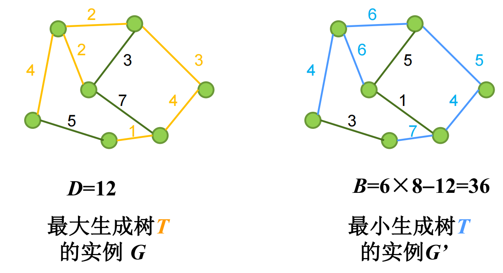
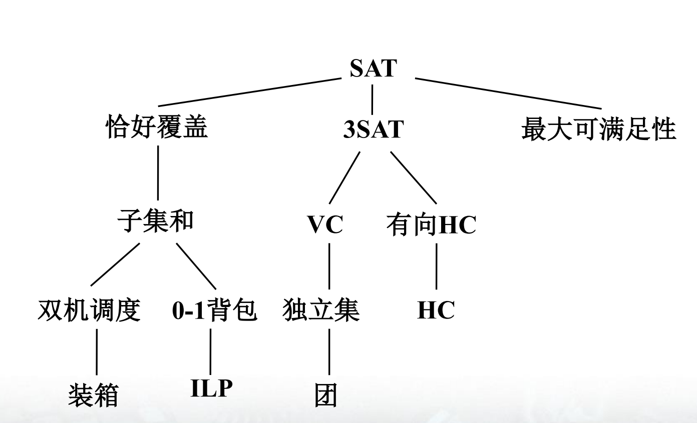
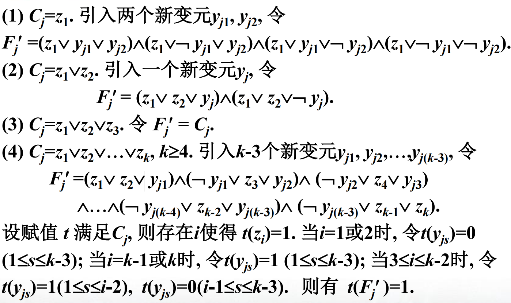
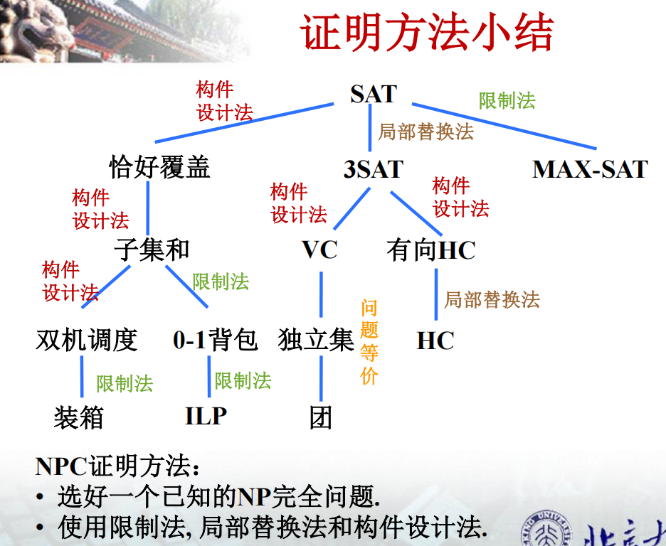

本文最后更新于 2026年11月5日 晚上
北京大学信息科学技术学院
算法设计与分析(2026春)的课程笔记
第九章：NP完全
和第八章比起来，这一章的抽象程度有过之而无不及，前半段是无数个抽象的定义，后半段则是有限个更抽象的证明，让我们慢慢欣赏~
P类与NP类
易解问题与难解问题
先给出两个函数多项式相关的概念：
设f，g都为N→N的函数，若∃多项式p,q，使得对于所有的n∈N，都有f(n)≤p(n)且g(n)≤q(n)，则称f和g是多项式相关的
例如nlogn和n2，n2+2n+5和n10是多项式相关
logn和n，n5和2n则不是多项式相关
接下来我们假设问题为Π，实例为I，用算法A求解I时，首先要把I编码成二进制字符串作为A的输入，我们称I的二进制编码长度为I的规模，记作∣I∣
(对于编码有一些说明，编码时不能故意多使用冗余字符，编码不能采用一进制等等)
如果存在函数f:N→N，使得对于任意规模为n的实例I，A对I的运算在f(n)步内停止，则A的时间复杂度为f(n)
于是有了一些定义~
多项式时间算法: 以多项式为时间复杂度.
易解的问题: 有多项式时间算法
难解的问题: 不存在多项式时间算法
先前我们已经学过了排序、最小生成树、单源最短路径等问题的多项式时间算法，所以他们都是易解问题
现在也已经证明了一些难解问题，有的是完全没法解，有的是有解但无法在多项式时间内解出
但难办的是还有一些问题，既找不到多项式时间算法，又无法证明它们是难解的，如哈密顿回路、货郎、背包问题，下面我们重点讨论的就是这些问题
判定问题
判定问题是指答案只有是或否的问题
形式化来说，判定问题Π可以定义为有序对<DΠ,YΠ>，其中DΠ为Π所有实例组成的集合，YΠ⊆DΠ 由所有答案为Yes的实例组成
例如哈密顿回路(HC)：任给无向图G，问G中是否存在HC(一个经过每个顶点恰好一次的回路)，可以定义为<DHC,YHC>，其中DHC为所有无向图组成的集合，YHC为所有存在HC的无向图组成的集合
显然，如果搜索HC是易解的，那么判定HC也是易解的，反之亦然
货郎问题(TSP)：任给n个城市，城市i与j之间正整数距离为d(i,j)，1≤i,j≤n，以及正整数D，问是否存在一条每一个城市恰好经过一次且长度不超过D的巡回路线，也即是否存在1,2,...,n的排列σ，使得Σi=1nd(σ(i),σ(i+1))≤D(其中σ(n+1)=σ(1))
同理，搜索TSP需要给出一条最短的巡回路线，如果搜索TSP易解，那么判定也是易解，所以TSP的组合优化问题不会比判定TSP问题容易
一般地说，组合优化问题Π∗由三部分组成：
- 实例集DΠ∗
- 对每一个实例I∈DΠ∗，有一个非空有穷集合S(I)，它的元素称为I的可行解
- 对每一个可行解s∈S(I)，有一个正整数c(s)，称为s的值
当Π∗为最小化问题时，若s∗∈S(I)，使得对于所有s∈S(I)，c(s∗)<c(s)
则称s∗为I的最优解，c(s∗)为I的最优值，记作OPT(I)
(最大化问题同理，感觉这段就是用极为形式化的语言说了一些废话)
Π∗对应的判定问题Π=<DΠ,YΠ>则定义如下：
DΠ=[(I,K)∣I∈DΠ∗,K∈Z∗]
当Π∗为最小化问题时，YΠ=[(I,K)∣OPT(I)≤K]
最大化同理，不等号反向即可
NP类
所有多项式时间可解的判定问题组成的问题类称作 P类
(这里的重点在于必须是判定问题，组合优化问题不属于 P类！)
对于一个判定问题Π=<DΠ,YΠ>，如果存在两个输入变量的多项式时间算法A和多项式p，使得对于任意实例I∈DΠ
I∈YΠ⟺∃t,∣t∣≤p(∣I∣)，且A对输入I,t输出Yes
则称Π为多项式时间可验证的,A为Π的多项式时间验证算法
当I∈YΠ时，称t为I∈YΠ的证据
所有多项式时间可验证的判定问题组成的问题类称作 NP类
我们来看，对于HC问题，可以设计如下算法：
任意给出无向图G，猜想所有顶点的某个排列，验证该排列是否构成一条HC，若是则回答Yes，否则回答No
当G为哈密顿图时，总能猜对一个排列；否则算法就永远回答No
猜想一个排列并检查其是否构成HC可以在多项式时间内完成，故$HC \in NP $
再比如，0-1背包问题：
任给n件物品和一个背包，物品i的重量为wi，价值vi，1≤i≤n，背包重量限制B，目标价值K，其中wi,vi,B,K均为正整数，问是否能在背包中装下总价值不少于K且总重量不超过B的物品
即是否存在子集T⊆[1,2,...,n]使得Σi∈Twi≤B且Σi∈Tvi≥K
显然我们能够多项式时间内任意猜想[1,2,...,n]的一个子集，并检查其是否满足上述两个不等式，故0-1背包也是NP问题
类似地，最长公共子序列也是NP问题
不难证明，P⊆NP
现在的问题是P=NP吗？
多项式时间变化与NP完全
多项式时间变换
由于对于许多NP问题始终找不到多项式时间算法，但也无法证明就是难解的
我们只能另辟蹊径，如果NP中有难解，那么NP中最难的必为难解
这就牵扯到了比较问题之间的难度
设判定问题Π1=<D1,Y1>，Π2=<D2,Y2>，若函数f:D1→D2满足：
- f多项式时间可计算
- 对于所有I∈D1，I∈Y1⟺f(I)∈Y2
则称f为Π1到Π2的多项式时间变换
如果存在Π1到Π2的多项式时间变换，则称Π1可多项式时间变换到Π2，记作Π1≤pΠ2
例如：HC≤pTSP
规定HC到TSP的变换f，对于HC任意实例I为无向图G=<V,E>,TSP对应实例f(I)为城市集V，任意两个不同的城市u,v之间距离
d(u,v)=1,if(u,v)∈E;else,d(u,v)=2
界限D=∣V∣
显然f是多项式可计算的，f(I)中每个城市恰好经过一次的巡回路线有∣V∣条边，每条边长度为1或2，故巡回路线长度≥D
刚好等于D时，每条边长度均为1，刚好等价于存在哈密顿回路，从而得证
又比如：最大生成树 ≤p 最小生成树
这里定义最小生成树：任给连通无向带权图G=<V,E,W>，权W、界限B为正整数，问是否存在权不超过B的生成树
最大生成树则是把界限改为D，问是否存在权不小于D的生成树
任给最大生成树实例I：连通无向带权图G=<V,E,W>，界限D
最小生成树对应实例f(I)：G′=<V,E,W′>，B=(n−1)M−D
其中n=∣V∣，M=max[W(e)∣e∈E]+1，W′(e)=M−W(e)
假设存在G生成树T，Σe∈TW(e)≥D，则有
Σe∈TW′(e)=(n−1)M−Σe∈TW(e)≤B
反之亦然同理，并且f显然在多项式时间内可计算，得证
下面是一个变换实例

接下来是关于≤p的各种性质，限于篇幅这里就只列举而不详细证明了
传递性：Π1≤pΠ2，Π2≤pΠ3，则Π1≤pΠ3
Π1≤pΠ2，则Π2∈P→Π1∈P，Π1难解 → Π2难解
由此可见，≤p提供了比较判定问题之间难度的一种方法，这也类似于上一章最后提到的归约
NP完全性及其性质
如果对于所有Π′∈NP，Π′≤pΠ，则称Π为NP难的
如果Π为NP难的且Π∈NP，则称其为NP完全的
由此可见，NP完全问题是NP中最难的问题
于是可以推出，如果存在NP难问题Π∈P，则P=NP
大部分人相信P=NP不成立，所以NP完全性很可能是一个问题难解(不属于P)的证据
由≤p的难度比较，若Π′为NP难，Π′≤pΠ，那么Π显然也是NP难
如果同时还有Π,Π′∈NP，那么Π就是NP完全的
于是我们得到了证明NP完全非常重要的办法：
- 证明Π∈NP
- 找到Π′为NP完全，且Π′≤pΠ
后面的叙述中我们会把NP完全简称为NPC(NP Complete)
第一个NPC问题：Cook-levin定理
在ai引论中我们学习过命题逻辑，合取范式析取范式等，例如：
F1=(¬x1∧x2∧¬x3)→(x1∧¬x2)
F2=(x1∨x2)∧(¬x1∨x2∨x3)∧¬x2
F3=(x1∨¬x2∨x3)∧(¬x1∨¬x2∨x3)∧x2∧¬x3
这里F1是合式公式，但不是合取范式，F2,F3都是合取范式
合取范式括号之间用∧连接，析取范式则用∨
给定每个变元的真假值称为变元的赋值，如果赋值t使得F为真，则称t为F的成真赋值，如果F存在成真赋值，称F为可满足的
例如令t(x1)=t(x3)=1,t(x2)=0，可知t为F1,F2的成真赋值，故F1,F2都是可满足的，t不为F3成真赋值，事实上F3本身就不可满足，找不到解
SAT问题：任给一个合取范式，问它是否是可满足的
Cook-levin定理：SAT是NPC问题，证明过难从略
几个NPC问题
接下来我们会从第一个NPC：SAT问题开始，利用多项式时间变换证明别的NPC，关系如图所示

MAX-SAT和3SAT
设判定问题Π=<D,Y>,Π′=<D′,Y′>,如果D′⊆D,Y′=D′∩Y,那么Π′实际上是Π的特殊情况，称作Π的子问题
例如HC的一个子问题是：给定一个平面图G，问G是否为哈密顿图
接下来我们看MAX-SAT：任给关于x1,x2,...,xn的简单析取范式C1,C2,...,Cm，问是否存在关于x1,x2,...,xn的赋值，使得C1,C2,...,Cm中至少K个为真
当K=m时，MAX-SAT就变为了SAT，所以SAT是MAX-SAT的子问题
显然一般情况总会难于特殊情况，如果子问题NP难，那么原问题显然更是NP难
于是我们来证明：MAX-SAT是NPC
显然MAX-SAT$\in $NP，任意猜想一个赋值验证即可
SAT ≤p MAXSAT也是非常容易证明的，从而MAX-SAT是NPC的
下面考虑SAT的一个子问题：3SAT
合取范式中每个简单析取范式恰好三个文字，称为3元合取范式
3SAT：任给一个3元合取范式，问其是否是可满足的
于是我们来证明：3SAT是NPC
由于3SAT为SAT特殊情况，故3SAT$\in $NP
接下来要证明SAT≤p 3SAT
任给一个合取范式F，要构造对应3元合取范式F′=f(F)，使得F可满足⟺F′可满足
设F=∧1≤j≤mCj，Cj为简单析取范式
对应F′=∧1≤j≤mFj′，其中Fj′对应Cj，为3元合取范式，并且Cj可满足⟺ Fj′可满足
下面我们分情况讨论构造Fj′

看上去十分高深，说穿了就是凑数法，如果Cj变元少于3个就补上，多于3个就把它平摊，最后用奇妙的办法让赋值结果一样即可
显然该构造可以在多项式时间内完成，故3SAT是NPC得证
这里用到的方法叫做局部替换法，因为此处两个问题的结构非常相似
顶点覆盖、团和独立集
设无向图G=<V,E>，V′⊆V
如果G每一条边都至少有一个顶点在V′中，称V′为G的一个顶点覆盖
如果对于任意u,v∈V′,u=v都有(u,v)∈E，则称V′为G的一个团
如果对于任意u,v∈V′都有(u,v)∈/E，则称V′为G的一个独立集
引理：下列命题等价
- V′是G顶点覆盖
- V−V′是G独立集
- V−V′是补图Gˉ=<V,Eˉ>的团
下面我们考虑这样的三个问题：
- 顶点覆盖(VC):正整数K≤∣V∣，问G是否存在顶点数不超过K的顶点覆盖
- 团：正整数J≤∣V∣，问G是否存在顶点数不少于J的团
- 独立集：正整数J≤∣V∣，问G是否存在顶点数不少于J的独立集
显然，这三个问题都属于NP，并且根据引理，很容易将这三个问题通过多项式时间互相变换，所以只需证明其中一个NPC，即可得到另外两个NPC
下面我们证明：VC是NPC问题
首先不难证明VC∈NP，任意猜想一个顶点集合验证即可
下面我们证明3SAT≤pVC
ppt中的证明实在过于晦涩难懂，我们这里稍加简化
3SAT中每个变元xi做成两个点xi和xiˉ，中间连一条边
顶点覆盖必须在这两个点之中选一个，这相当于给xi赋值
3SAT每个子句都只有三个变元可以做成一个三角形，那么顶点覆盖必须在这个三角形中选两个点，剩下没选的那个点对应的文字，就是子句中为真的那个，最终整个图需要n+2m个顶点，其中n为变量数，m为子句数，这样3SAT有解⟺这个图有大小恰好为n+2m的顶点覆盖
由于3SAT是NPC，所以VC也是NPC
这里采用的方法称为构件设计法
其他常见NPC问题(了解即可)
有向哈密顿回路：任给有向图，问其中是否存在哈密顿回路
恰好覆盖：是否能用一些彼此不交的子集恰好拼出某个集合
子集和：给定正整数集合，问其是否存在子集，子集之和刚好为某个给定正整数
装箱：知道n件物品各自重量，共有K个箱子，每只箱子重量上限不超过B，问是否能用K个箱子装完所有物品
双机调度问题：前面几章有提到过，大概就是两台一样的机器和完全没有先后顺序要求的n项作业，问是否能在ddl之前合理分配作业让两台机器做，从而完成所有作业
整数线性规划：Am×n整数矩阵，bm×1向量，问是否存在xn×1向量，且x的每一维都是正整数，使得Ax≥b
具体证明方法如下，不再一一讨论

从判定问题到优化问题：Turing归约
设π1,π2为搜索问题或优化问题，A是利用解π2的”假想子程序“s来解π1的算法
只要s,A都是多项式时间的，那么我们称
算法A是从π1到π2多项式时间的Turing归约
这时也称π1Turing归约到π2，记作π1∝Tπ2
本质上相当于只要你多项式时间能解出π2，那多项式时间之内π1也迎刃而解
显然，多项式变换是特殊的Turing归约
设π是搜索问题，如果存在NPC问题π′，π′∝Tπ，则称π为NP-hard
这意味着从多项式可计算角度来说，π至少和NPC问题一样难
许多NPC对应的优化问题都是NP-hard
反之也有许多优化问题可以Turing归约到对应判定问题，称作NP-easy
NP-hard+NP-easy称为NP等价
例如货郎问题的优化问题(给出一条最短的巡回路线)是NP等价的
首先它是NP-hard，这个十分显然，下面我们证明它是NP-easy(能用判定问题黑箱解决)
解法：
- 用二分法猜一个最短长度B*（介于最小可能和最大可能之间）
- 每次调用判定问题的黑箱，问“有没有长度不超过B的路线？”
- 根据答案缩小范围，最后找到B*
- 再一步步构造出具体路线（比如先选第一个城市，再试第二个…）
同样可以证明六个基本NPC问题对应的优化问题都是NP-等价的
笔者按：终于更完了这一章……头晕脑胀ing，NP这些抽象概念和抽象证明实在是害人不浅，但是这些没学好的话第十章也不方便更新，凑合着写完了长篇大论，日后想必还需要多多复习